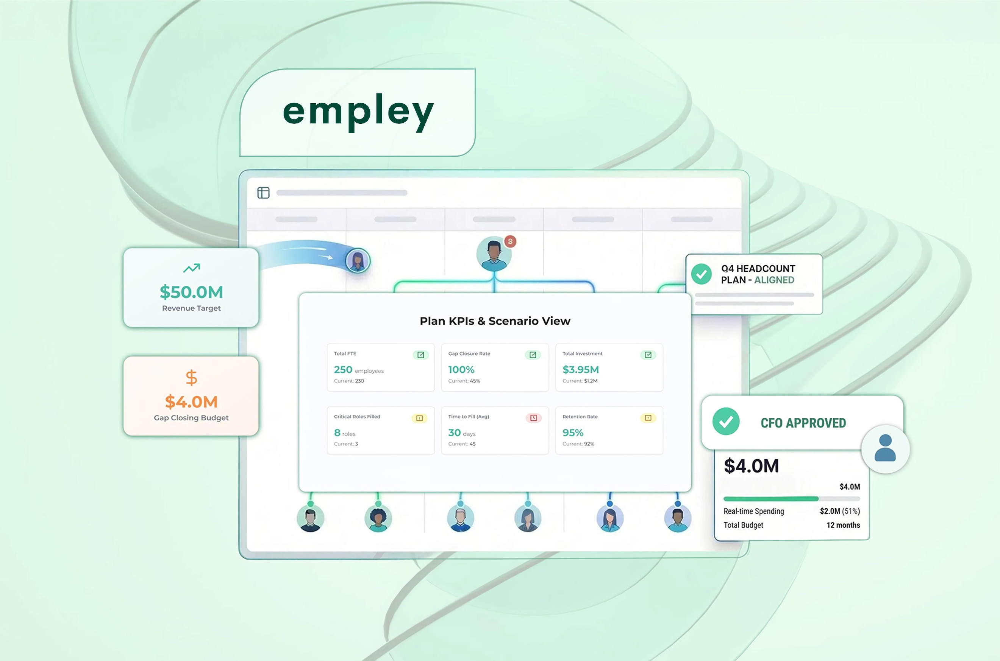
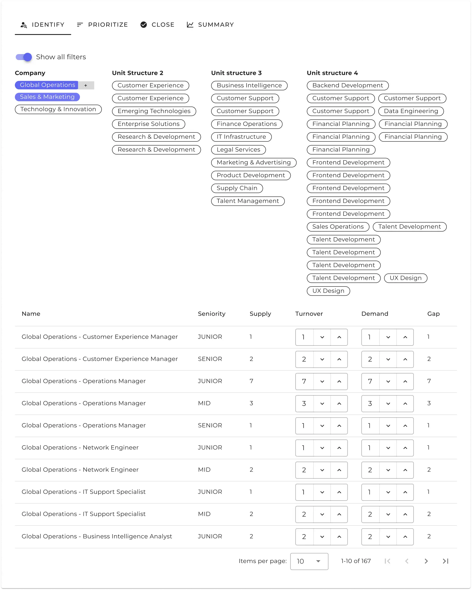
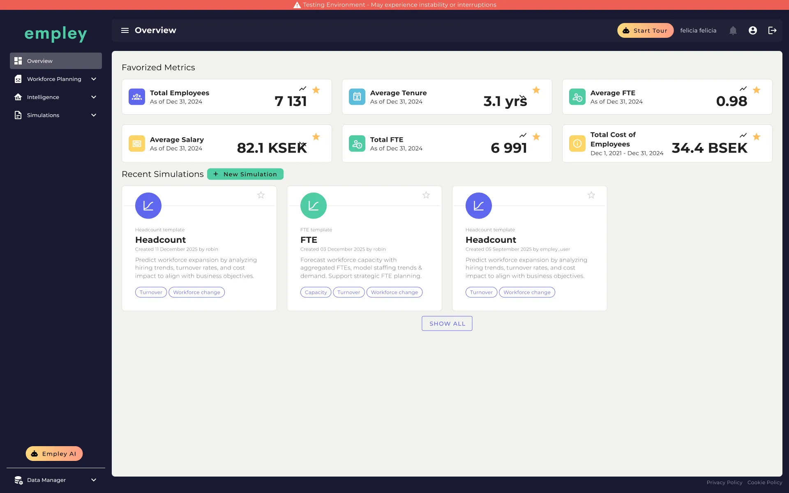
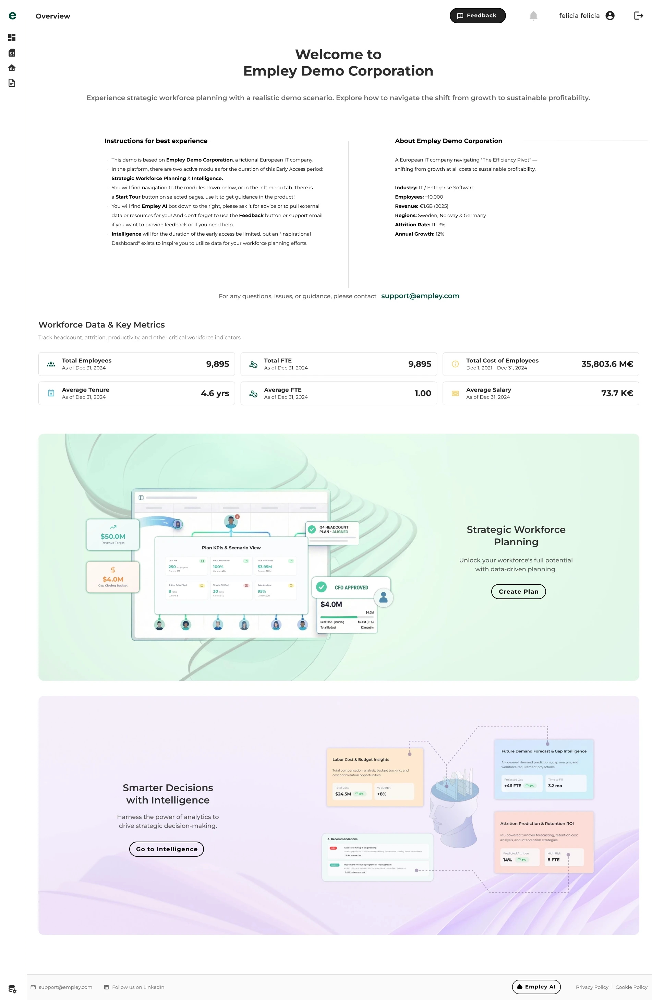
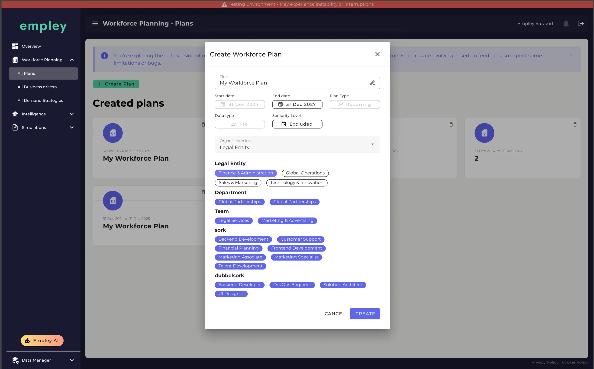
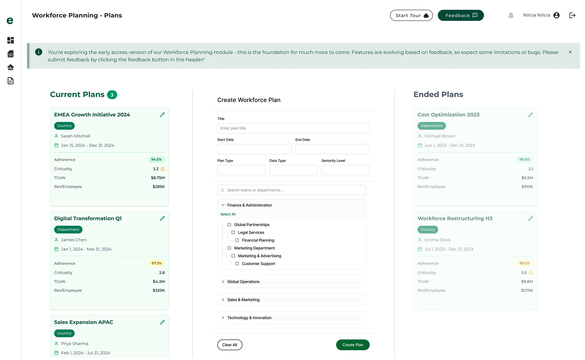
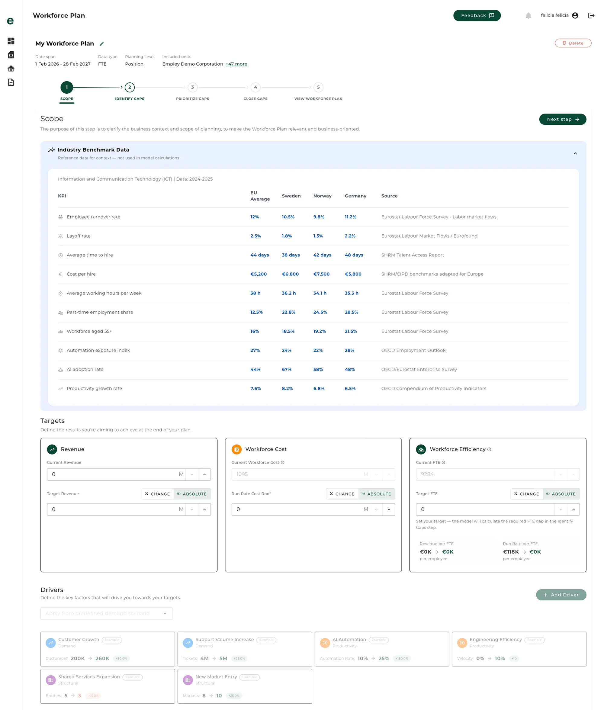
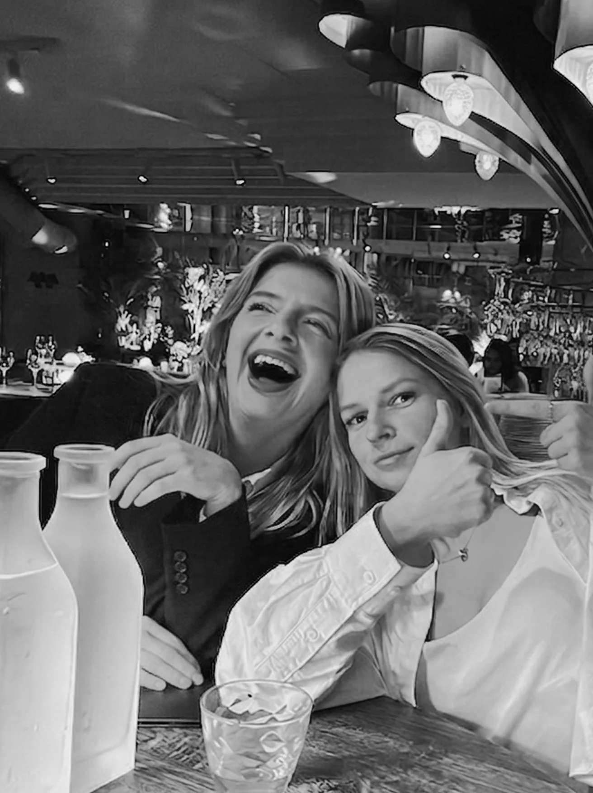

UX & UI Design — B2B SaaS — Design System
Workforce Planning Tool: from Cluttered to Clear

No designer. Six weeks.
When I joined this young startup in December of 2025, the product was technically solid, but visually unconvincing. It was built by (and for) developers.
The issues.
Confusing hierarchy, dark and inconsistent color theme, mixed fonts and mixed component styles. This meant a low-trust feel and difficulty scanning and understanding what needed attention. There was no design system and no prior design decisions to build from.
The constraints.
Approximately 10 hours a week, alongside full-time studies, job hunting, and a one-year-old at home. Six working weeks total, Christmas break included(!). Two of us: me on design, Melina Andersson on fullstack development. No users to test with, no research budget, and no structured codebase access.

UX Designers worldwide: *screams internally*
Sole UX & UI Designer.
As the first and only (actual) designer, I owned everything from brand analysis to micro-interaction decisions. Melina, my genuinely brilliant fullstack developer, was simultaneously writing and shipping the product. Handoffs needed to be clear enough to implement without back-and-forth we didn't have time for.
My design work.
- Brand strategy, present and future.
- Interaction and component design.
- Information architecture across the entire product.
- Brand asset updates for favicon, logos, CMYK print files.
My workflow and delivery.
There wasn't time to learn the perfect vibe coding workflow, yet. But I gave myself the time to sit down, brainstorm and draw up an AI workflow for myself.
- I set up Southleft's "figma-console-mcp" by TJ Pitre, instead of Figma's official MCP, since it was technically superior.
- I got that MCP connection to automate repetitive and time-consuming tasks in the design system and during the prototype phase.
- When the prototype felt like a fleshed-out skeleton, I linked both it and the design system as a reference, into Figma Make.
- This meant faster iterations with better results, and decent zipped React files, for my developer.
Ship now. Fix it in post.
Six weeks is too short for a full rebrand and exactly long enough to set one in motion. The work ran on two tracks simultaneously: ship a beta-ready product, and lock in a visual direction the founders could build toward after launch.
Visual direction.
My deep-dive competitor analysis established where Empley sat in the market and where it could go. The proposed overall rebrand direction (Space Grotesk font, orange and purple accent colors) was approved by the founders as the next big design system task for me, after launch.
For beta, I decided on the path of least resistance, until time for a bigger re-brand was possible. This meant white base, with green and black primary accents, to keep everything aligned with existing materials.
Current logo.
My logo.

Before: developer-built, dark theme, no visual hierarchy.

After: light theme, simplified architecture, demo-ready panels.
Dashboard.
Before
- No real product data yet, which made the huge metrics a waste of (important) space.
- Developer-built dark theme with no visual system.
- Metric boxes exposed empty states with no explanation.
- Icon clutter competing with the data.
- No clear hierarchy or entry points for sales walkthroughs.
After
- Light theme with simplified, legible architecture.
- Context messaging on empty metric boxes: demo-appropriate, not broken-looking.
- Icon language stripped back to essentials.
- Two feature entry-point panels built specifically for sales walkthroughs.
Plan creation form.
Before
- Flat pill structure, fine at small scale but unmanageable for enterprise clients with hundreds of departments.
- HR teams had to scroll through everything: no filtering, no grouping.
- Broke visually and functionally at enterprise scale.
After
- Progressive disclosure: tree hierarchy for top-level categories, accordions for sub-departments.
- Checkboxes for multi-select across nested levels.
- Designed to scale from a 20-person company to a 20,000-person one.
- Evolved into a modal format mid-sprint as the plan management structure clarified.

Before: flat pill structure, breaks at enterprise scale.

After: progressive disclosure, tree hierarchy, sub-department accordions.

The five-step workflow.
The "create plan" flow was complex, packing an information-heavy enterprise HR landscape into five steps. While intermediate users could navigate this easily, beginners risked getting lost in metrics like FTE gaps, attrition forecasts, and cost columns. To balance this data-density, contextual guideposts were crucial.
- I designed and built the step progress bar in React as well as context-aware accordion menus on each step, with "how and why"-info pertaining to each step.
- Every single step was incredibly data-heavy, requiring careful placement of metric cards, industry benchmarks, and dense tables.
Shipped with reservations.
I had layout and hierarchy opinions about nearly every table. While I managed to polish the visual hierarchy and add some UX friendly queues before launch. The deeper structural logic, remained a work in progress and the company went into hiatus before I could fully untangle logic, look and feel.
It shipped. On time.
All core workflows launched in production on schedule. My purposely scaled down and simple design system, meant that our developer could focus on heavy building and logic, instead of design tweaks.
What landed in production.
- New component library, light theme, consistent hierarchy across every screen.
- All five workforce planning workflow steps redesigned.
- Scalable plan creation form, replacing the flat pill structure.
- Dashboard with sales-demo-ready entry-point panels.
- Updated brand assets across digital and print.
Retrospect & reflections.
Constraints can be a gift. Working 10 hours a week meant every decision had to earn its place; there was no room for redesigning for its own sake. It also forced an urgent need for an efficient AI workflow, which in turn accelerated my skills.
If we had survived the classic startup "valley of death" and I'd worked on this full-time, I would have implemented textbook UX methodology like the Double Diamond—research, user testing etc.—as well as some rigorous design system work. But learning to let go of pixel perfection and not adjust every single detail was probably really good for me.
Ultimately, I view these few months as an intensive bootcamp, teaching me lessons only a (sometimes chaotic) startup can.
In their words.
“Our UI/UX rockstar Felicia turned complex ideas into something that actually feels calm and intuitive to use.”
“Special thanks to Felicia Borssén for making a minor miracle happen in very short time.”

Melina and I, celebrating the beta launch over a well-earned dinner.